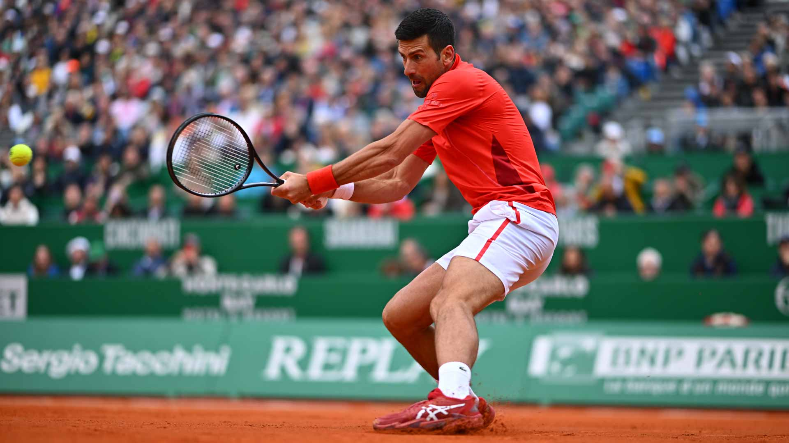
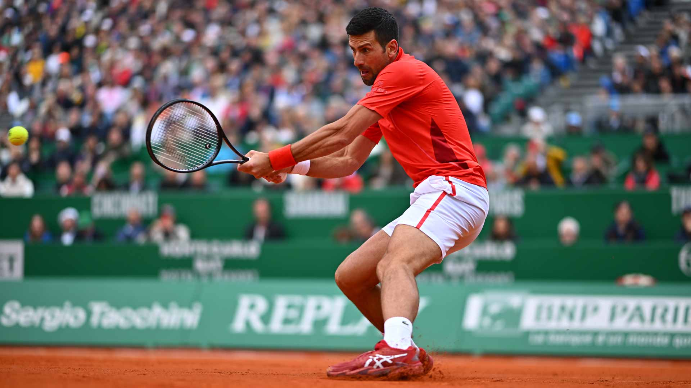

Hello my name is Nick van Eck I'm a software developer and 17 years young.
I'm going to collage at Sintlucas in Eindhoven the Netherlands and need to travel 3 hours a day.
My main programming languages are HTML, CSS and C# but we've also learned javascript.
I also like to tennis at least 3,5 hours per week training and atleast 2 hours with friends.
In my free time I like to play video games or watch movies and sometimes going out with friends.
I also have a 3d printer that I use for fun projects I made, I also like to take it apart and rebuild it.
I'm also adicted to building pc's I've build my own computer and put the parts together myself.
I listen to a lot of music like country and rock and i listen to queen ac/dc guus meeuwis and some carnaval songs.
 
